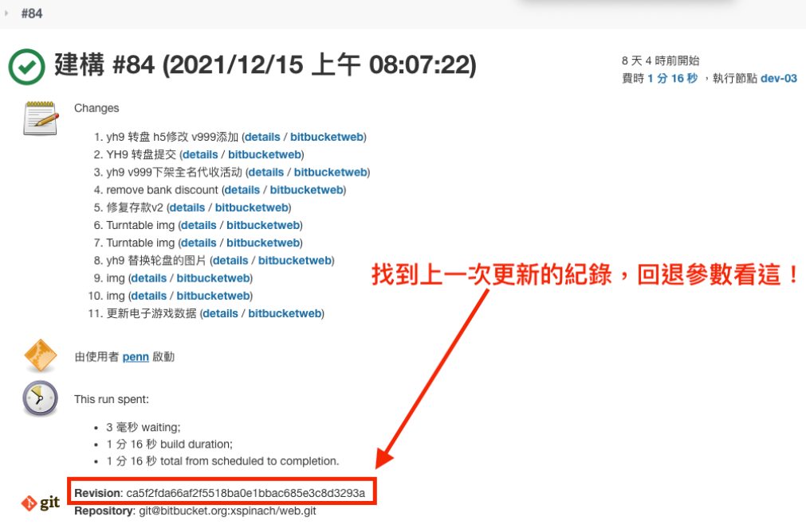
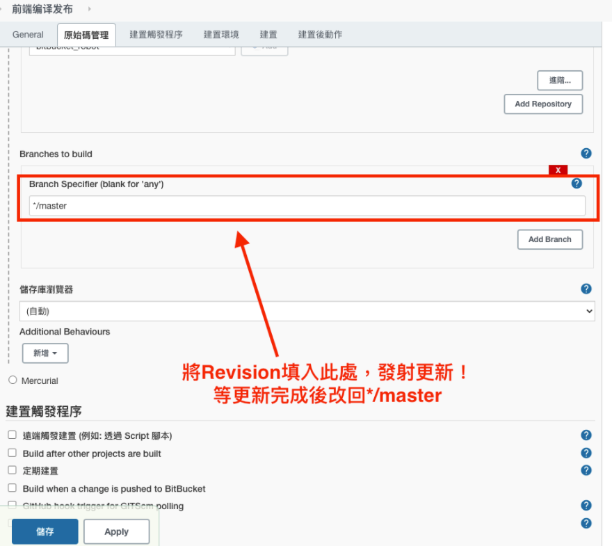

前後端更新
⭐⭐注意事項⭐⭐
- 前後端更新時，後端先更新完才能更新前端
- 多平台更新時，要一個平台所有流程走完才能換平台
- 8yl和wcg各有多個前端模板，所以前端更新要注意參數
至Jenkins判斷點選更新之路徑
⭐ 常用名稱 : ⭐
| Jenkins對應路徑 | 別名 |
| 8yl | 8娛樂 |
| tyc | 8ty、太陽城 |
| vns | vns->8vn、威尼斯 |
| hg | 82hg、皇冠 |
| wcg | 仿站 |
| hg1 | v9皇冠 |
| v999 | v9威尼斯 |
| yh9 | v9銀河 |
| bochat | 博聊 |
| Bopay-payment | Bopay-payment |
| resource-server | 趣播、Qubo |
⭐平台頁面⭐
前端(前後端更新，後端先更)
非8yl和wcg
平台->前端編譯發布->前端發布CDN(自動跑)->完成後回報
8yl和wcg(不用等待即可換模板建置)
平台->更新集群web前端->選擇平台參數->telegram出現(ArgoCD new version)->完成後回報
後端
非8yl和wcg
平台->服務器更新重啟/發版->更新整站(自動跑)->完成後回報
「INSTALL_DEPS」，不勾選為建置時參數，有時失敗的可能原因，也可以請求協助。
8yl和wcg(不用等待即可換模板建置)
平台->更新集群server服務端->服務器更新重啟/發版(自動跑)->telegram出現(ArgoCD new version)->完成後回報
⭐bochat更新⭐
bochat-server(後端)
Bochat->Prod->bochat-server->telegram出現(ArgoCD new version)->完成後回報
bochat-admin(前端)
Bochat->Prod->bochat-admin->telegram出現(ArgoCD new version)->完成後回報
bojump-admin(前端)、bojump(後端)
Bochat->Prod->bojump-admin(前端)或bojump(後端)->telegram出現(ArgoCD new version)->完成後回報
⭐Bopay-payment更新⭐
Bopay-payment->Prod->bopay-payment->telegram出現(ArgoCD new version)->完成後回報
Error response from daemon: No such image: spinach.azurecr.io/bopay-payment:1.0.333-pre
出現這個，請先至Pre跑完再到Prod重跑流程。
⭐趣播、Qubo更新⭐
resource-server->Prod->服務器更新重啟/發版->完成後回報
⭐Jenkins版本回退⭐
⭐⭐注意⭐⭐，只適用於平台，不包含8yl和wcg
複製要回退至目標版本號

進入組態中進行修改並儲存，之後按建置即可，記得改回master分支
